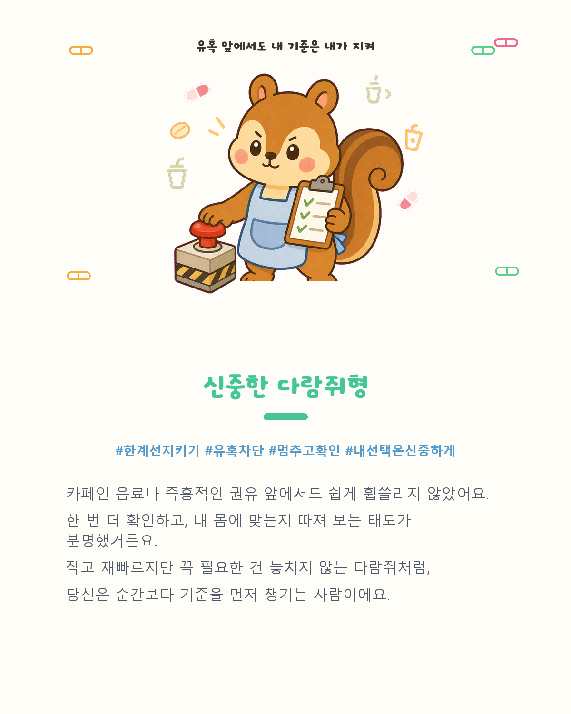
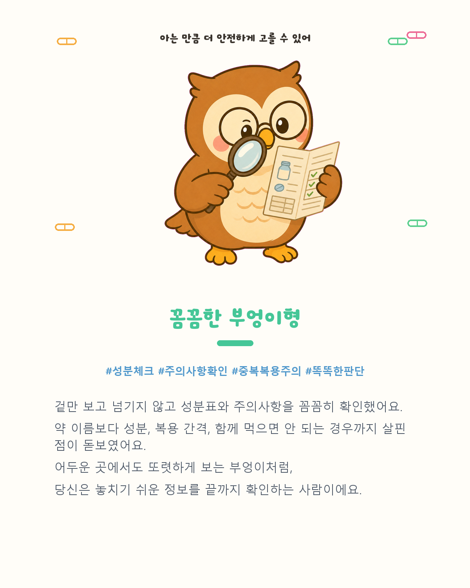
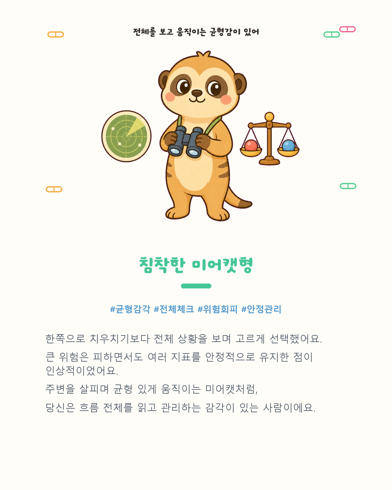

교실에서 마주한 장면
교실 책상 위에는 카페인 음료가 쌓이고, 졸리거나 머리가 아프다고 말하는 학생들이 많았습니다. 어지러움이나 가슴 답답함을 호소하며 보건실을 찾는 모습도 보았습니다. 이런 일상에서 학생들이 쉽게 접하는 카페인 음료와 일반의약품을 얼마나 알고, 어떤 기준으로 선택하는지 궁금해졌습니다.
교사용 수업 안내
일반의약품 오남용 예방 육성 시뮬레이션
카페인과 일반의약품을 누가 권해서가 아니라, 성분과 효과, 복용 기준을 이해한 뒤 스스로 선택하는 힘을 기르는 수업 활동입니다.



알고 먹는 습관STARTING POINT
학생의 일상에서 출발한 질문을, 안전한 선택을 연습하는 수업으로 옮겼습니다.
교실 책상 위에는 카페인 음료가 쌓이고, 졸리거나 머리가 아프다고 말하는 학생들이 많았습니다. 어지러움이나 가슴 답답함을 호소하며 보건실을 찾는 모습도 보았습니다. 이런 일상에서 학생들이 쉽게 접하는 카페인 음료와 일반의약품을 얼마나 알고, 어떤 기준으로 선택하는지 궁금해졌습니다.
“엄마가 줘서”, “병원에서 줘서” 그냥 먹는 약이 아니라, 왜 먹는지, 어디에 효과가 있는지, 어떤 성분이 들어 있는지, 언제 얼마나 먹어야 하는지를 확인하기를 바랐습니다.
카페인과 일반의약품에 대한 지식을 외우는 데서 그치지 않고, 실제 생활과 닮은 상황에서 성분과 용법, 자신의 몸 상태를 살피며 더 안전한 선택을 연습하도록 만들었습니다.
약은 ‘누가 줬는가’보다 왜 먹는지, 무엇이 들어 있는지, 어떻게 먹어야 하는지를 알고 선택해야 합니다.
SIMULATION FLOW
일곱 개 날짜를 하루씩 보내는 방식이 아니라, 시험 7일 전부터 시험 당일까지 중요한 네 시점을 따라가며 선택하는 육성 시뮬레이션입니다.
D-7
고카페인 음료 권유를 받고 라벨과 카페인 함량을 확인합니다. 피곤함을 어떻게 해결할지도 선택합니다.
D-5
공복 복용, 복용 간격, 친구가 건넨 약처럼 일상에서 흔히 만날 수 있는 상황을 판단합니다.
D-3
술과 진통제, 성분 중복, SNS 건강 정보, 수면과 시험 준비 사이에서 안전한 기준을 찾습니다.
D-Day
핵심 개념 미니퀴즈를 풀고, 누적된 선택을 바탕으로 결과 캐릭터와 육각형 능력치를 확인합니다.
GROWTH SYSTEM
플레이어는 ‘나’라는 캐릭터를 만들고 상황마다 선택합니다. 무엇을 얻으면 다른 것을 잃을 수도 있기 때문에, 단순히 높은 점수를 찾기보다 나와 주변을 함께 지키는 최적의 선택을 고민하게 됩니다.
토론 질문 같은 결과가 나와도 선택 과정은 같았을까요? 어떤 선택이 능력치와 결과에 영향을 주었는지 비교해 보세요.
8 RESULT TYPES
캐릭터의 이름이나 카드를 누르면 결과 카드 원본을 크게 볼 수 있습니다.
CLASSROOM & MAKING
이론을 배운 뒤 지식을 실제 선택에 적용하고, 서로의 판단 근거를 이야기하는 단계에 활용하기 좋습니다.
RECOMMENDED FLOW
카페인, 일반의약품 성분, 용법·용량, 복용 간격과 성분 중복을 학습합니다.
학생이 자신의 캐릭터를 설정하고 시험 전 상황에서 선택을 진행합니다.
결과 캐릭터와 육각형 능력치를 보며 어떤 선택이 영향을 주었는지 확인합니다.
서로 다른 선택의 이유를 비교하고 더 안전한 대안을 설명합니다.
약과 카페인을 선택하기 전에 확인할 기준을 학생 자신의 언어로 정리합니다.
AI-ASSISTED MAKING
프린세스메이커와 모바일 게임 ‘수업생 키우기’ 같은 육성 시뮬레이션에서 착안했습니다. 교사가 학생 생활에서 문제를 발견하고 교육 목표와 상황, 선택지, 의학·약학 내용을 설계하고 검토했습니다.
학습 목표, 실제 상황, 선택지와 피드백을 구성하고 내용의 정확성을 검토했습니다.
육성 시뮬레이션의 큰 흐름과 화면 구조를 구상하는 데 활용했습니다.
코드 작성과 수정, 기능 연결, 오류 점검을 반복하며 게임을 구체화했습니다.
배경, 캐릭터, 결과 카드 등 학습 경험을 돕는 시각 자료를 제작했습니다.
AI가 교육 내용을 결정한 것이 아니라, 교사가 방향과 기준을 세우고 결과를 검토하며 제작 도구로 활용했습니다.